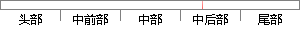

本文中，为了使结果更具说服性，我们将采用保留交叉验证（Hold-out Cross Validation）和十折交叉验证（10-Fold Cross Validation）两种方法来检验我们模型的好坏。
片段位置图

相似结果|
1
原句片段：本文中，为了使结果更具说服性，我们将采用保留交叉验证（Hold-out Cross Validation）和十折交叉验证
相似片段 1：因此,为了让之后的研究成果更加靠谱,作者提倡我们都...在保留交叉验证(hand-out cross validation)中,随机...用4个点train你的模型,得到的结果有80%的成功率。...
2
原句片段：（10-Fold Cross Validation）两种方法来检验我们模型的好坏。
相似片段 1：“即如10折交叉检验,每次检验就可以得到一个模型,...因为k-fold cross validation的目的不是为了选择模型...因此,我们就使用了每个数据点来检测模型的好坏。 ...
|
※ 片段修改建议 ※
近似词参考：- 结果：成果 成绩 成效 后果 了局 效果
- 我们：咱们
- 采用：采取 接纳 采纳
- 保留：保存
- 交叉：交织
- 交叉：交织
- 检验：查验 检讨 检修 磨练
- 我们：咱们
- 模型：模子
- 好坏：黑白 利害 优劣
系统自动生成语句：本文中，为了使成果更具说服性，咱们将采取保存交织验证（Hold-out Cross Validation）和十折交织验证（10-Fold Cross Validation）两种方法来查验咱们模子的黑白。
注：本片段修改建议为系统自动生成，仅供参考。